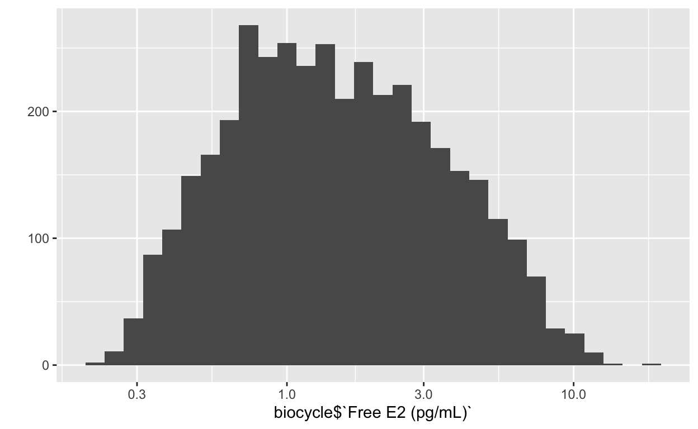
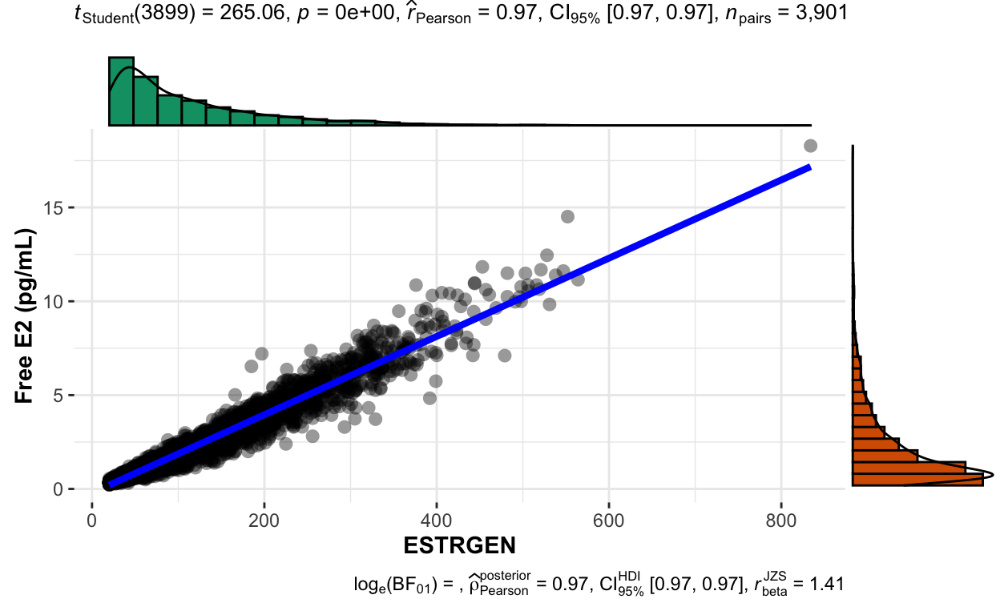
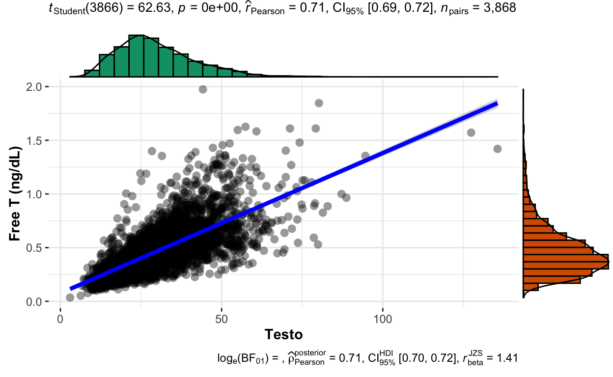

From Prasad et al. 2014
Blood collection and handling protocols were designed to minimize variability (Wactawski- Wende et al., 2009). All samples were processed and frozen at −80°C within 90 minutes of phlebotomy and analytes were measured in participant-specific batches within a single run to limit analytical variability. Estradiol, LH, follicle-stimulating hormone (FSH), and progesterone concentrations were measured in serum samples using solid-phase competitive chemiluminescent enzymatic immunoassays (DPC Immulite 2000 analyzer, Siemens Medical Solutions Diagnostics, Deerfield, IL) at the Kaleida Health Center for Laboratory Medicine (Buffalo, NY). Serum testosterone was measured by liquid chromatography/ tandem mass spectrometry (Shimadzu Prominence Liquid Chromatogram with an ABSceix 5500 tandem mass spectrometer) by the Advanced Research and Diagnostic Laboratory, Minneapolis, MN. Increased sensitivity was achieved by using 100% acetonitrile mobile phase B as the solvent gradient elution and adding a low standard of 4 ng/dL. The interassay maximum coefficients of variation reported by the laboratory were ≤10% for estradiol; ≤5% for LH and FSH; ≤14% for progesterone; and ≤7% for testosterone. All hormone measurements were log-transformed for normality before statistical analysis and then transformed by exponentiation for table display. In addition, LH and progesterone measurements were restricted in the analysis to mid-cycle (three days around the LH surge) and luteal phase (early, mid and late), respectively, as these are the phases with the greatest
── Attaching packages ───────────────────────────── tidyverse 1.3.1 ──✓ ggplot2 3.3.5 ✓ purrr 0.3.4
✓ tibble 3.1.4 ✓ dplyr 1.0.7
✓ tidyr 1.1.3 ✓ stringr 1.4.0
✓ readr 2.0.1 ✓ forcats 0.5.1── Conflicts ──────────────────────────────── tidyverse_conflicts() ──
x dplyr::filter() masks stats::filter()
x dplyr::lag() masks stats::lag()Load various datasets
biocycle <- rio::import("../data/BioCycle_StudyItems/biocycle04202017.sas7bdat")
biocycle_with_labels <- biocycle
biocyclecsv <- rio::import("../data/BioCycle_StudyItems/biocycle04202017.csv")
biocycle_between <- rio::import("../data/BioCycle_StudyItems/biocyclebaseline05022017.sas7bdat")
biocycle_update <- rio::import("../data/BioCycle_StudyItems/biocycle_update.sas7bdat") # todo: is peak day really expressed as cday? I think so
biocycle_sexdiary <- rio::import("../data/BioCycle_StudyItems/sex_nodates.sas7bdat")
# add on update data with albumin and testosterone, urinary hormones and self-rep cycle length
biocycle <- biocycle %>% left_join(biocycle_update %>%
select(id = idnum, cycle, day, visit, ALBUMN, Testo, cycle_length_bl, LH_monitor_peak, E3g_monitor_peak, peak_day))
Joining, by = c("id", "cycle", "day", "visit")biocycle <- full_join(biocycle, biocycle_between, by = c("id" = "idnum"))
var_label(biocycle$Testo) <- "Testosterone (ng/dL)"
var_label(biocycle$ALBUMN) <- "Albumin (g/dL)"
var_label(biocycle$cycle_length_bl) <- "Self-reported cycle length"
xtabs(~ day + visit, biocycle) # day is a redundant re-expression of visit type
visit
day CL F1 L1 L2 M1 O1 O2 O3
2 0 0 0 0 508 0 0 0
7 0 508 0 0 0 0 0 0
12 0 0 0 0 0 510 0 0
13 0 0 0 0 0 0 510 0
14 0 0 0 0 0 0 0 505
18 499 0 0 0 0 0 0 0
22 0 0 486 0 0 0 0 0
27 0 0 0 389 0 0 0 0## I don't have labelled missing values for testo and albumin, so I don't know which are missing due to limits of detection and which because the assay was not run
table(biocyclecsv$SHBG %in% c("", "M"), biocyclecsv$ESTRGEN %in% c("", "M"), biocyclecsv$PROGEST %in% c("", "M"), exclude = NULL)
, , = FALSE
FALSE TRUE
FALSE 3897 0
TRUE 4 0
, , = TRUE
FALSE TRUE
FALSE 0 0
TRUE 0 14# heuristically I can apparently hope to infer that these 14 samples had too little serum/were not run
biocycle$noserum <- biocyclecsv$ESTRGEN %in% c("", "M")
sum(biocycle$noserum)
[1] 14Limits of detection
Here, I label values below the limit of detection as left-censored and impute them using the limit (not divided by √2, as I will proceed to use a model-based approach in brms). Sources for the limits of detection: BioCycle documentation of the IMMULITE 2000 assays where possible (E, P), lowest observed value + other online descriptions of IMMULITE assays (SHBG, ALBUMIN, T).
ESTRGEN Testo PROGEST SHBG ALBUMN
1 102 47 161 22 16biocycle %>% filter(ESTRGEN <= 20) %>% select(ESTRGEN)
ESTRGEN
1 6.9
2 20.0
3 20.0
4 20.0
5 20.0
6 20.0
7 20.0
8 20.0
9 20.0
10 20.0
11 20.0biocycle$ESTRGEN_cens <- if_else(biocyclecsv$ESTRGEN == "L" | biocycle$ESTRGEN < 20, "left", "none")
table(is.na(biocycle$Testo))
FALSE TRUE
3868 47 biocycle$Testo_cens <- if_else(biocycle$Testo < 3, "left", "none", NA_character_)
biocycle %>% filter(PROGEST <= 0.2) %>% select(PROGEST)
PROGEST
1 0.2
2 0.2
3 0.2
4 0.2
5 0.2
6 0.2
7 0.2
8 0.2
9 0.2
10 0.2
11 0.2
12 0.2
13 0.2
14 0.2
15 0.2
16 0.2
17 0.2
18 0.2
19 0.2
20 0.2
21 0.2
22 0.2
23 0.2
24 0.2
25 0.2
26 0.2
27 0.2
28 0.2
29 0.2
30 0.2
31 0.2
32 0.2
33 0.2
34 0.2
35 0.2
36 0.2
37 0.2
38 0.2
39 0.2
40 0.2
41 0.2
42 0.2
43 0.2
44 0.2
45 0.2
46 0.2
47 0.2
48 0.2
49 0.2
50 0.2
51 0.2
52 0.2
53 0.2
54 0.2
55 0.2
56 0.2
57 0.2
58 0.2
59 0.2
60 0.2
61 0.2
62 0.2
63 0.2
64 0.2
65 0.2
66 0.2
67 0.2
68 0.2
69 0.2
70 0.2
71 0.2
72 0.2
73 0.2
74 0.2
75 0.2
76 0.2
77 0.2
78 0.2
79 0.2
80 0.2
81 0.2
82 0.2
83 0.2
84 0.2
85 0.2
86 0.2
87 0.2
88 0.2
89 0.2
90 0.2
91 0.2
92 0.2
93 0.2
94 0.2
95 0.2
96 0.2
97 0.2
98 0.2
99 0.2
100 0.2
101 0.2
102 0.2
103 0.2
104 0.2
105 0.2
106 0.2
107 0.2
108 0.2
109 0.2
110 0.2
111 0.2
112 0.2
113 0.2
114 0.2
115 0.2
116 0.2
117 0.2
118 0.2
119 0.2
120 0.2
121 0.2
122 0.2
123 0.2
124 0.2
125 0.2
126 0.2
127 0.2
128 0.2
129 0.2
130 0.2
131 0.2
132 0.2
133 0.2
134 0.2
135 0.2
136 0.2
137 0.2
138 0.2
139 0.2
140 0.2
141 0.2
142 0.2
143 0.2
144 0.2
145 0.2
146 0.2
147 0.2biocycle$PROGEST_cens <- if_else(biocyclecsv$PROGEST == "L" | biocycle$PROGEST < 0.2, "left", "none")
# according to https://www.ncbi.nlm.nih.gov/pmc/articles/PMC5754513/ the LOD for IMMULITE 2000 SHBG is 0.8nmol/L, but the lowest value measured here is 4.7 (and the reference is for a 2-site, this was 5-site I think)
biocycle %>% arrange(SHBG) %>% select(SHBG, noserum) %>% head
SHBG noserum
1 4.7 FALSE
2 5.0 FALSE
3 5.0 FALSE
4 5.1 FALSE
5 5.1 FALSE
6 5.6 FALSEmin(biocycle$SHBG, na.rm = T)
[1] 4.7
L M
14 4 4 biocycle$SHBG_cens <- if_else(biocyclecsv$SHBG == "L" | biocycle$SHBG < 2, "left", "none")
table(is.na(biocycle$SHBG))
FALSE TRUE
3893 22 # could not find a source, so using lowest observed value
biocycle %>% arrange(ALBUMN) %>% select(ALBUMN, noserum) %>% head
ALBUMN noserum
1 1.7 FALSE
2 2.9 FALSE
3 3.1 FALSE
4 3.1 FALSE
5 3.1 FALSE
6 3.1 FALSE
FALSE TRUE
FALSE 3895 4
TRUE 6 10biocycle$ALBUMN_cens <- if_else(is.na(biocycle$ALBUMN) & !biocycle$noserum, "left", "none")
biocycle <- biocycle %>%
mutate(
ESTRGEN = if_else(ESTRGEN_cens == "left", 20, ESTRGEN),
Testo = if_else(Testo_cens == "left", 3, Testo),
PROGEST <- if_else(PROGEST_cens == "left", 0.2, PROGEST),
SHBG = if_else(SHBG_cens == "left", 2, SHBG),
ALBUMN = if_else(ALBUMN_cens == "left", 1.7, ALBUMN)
)
biocycle %>% select(ESTRGEN, Testo, PROGEST, SHBG, ALBUMN) %>% summarise_all(~sum(is.na(.)))
ESTRGEN Testo PROGEST SHBG ALBUMN
1 14 47 161 18 10biocycle <- rescue_attributes(biocycle, biocycle_with_labels)
var_label(biocycle$ESTRGEN)
[1] "Estradiol (pg/mL) numeric"Add free hormone levels
Ugly: requires exporting and manual copy-pasting to an Excel sheet received from Tom Fiers.
rio::export(biocycle %>% select(SHBG, ALBUMN, Testo, ESTRGEN), "../data/BioCycle_StudyItems/hormones_for_conversion.xlsx")
free_hormones <- readxl::read_xlsx("../data/BioCycle_StudyItems/hormone_converted_to_free.xlsx", skip = 1) %>% select(SHBG = shbg, ALBUMN = `Alb.`, Testo = `T...7`, ESTRGEN = E2, `Free T (ng/dL)`, `Free E2 (pg/mL)`)
New names:
* `` -> ...2
* nr -> nr...3
* `` -> ...4
* T -> T...6
* T -> T...7
* ...biocycle2 <- biocycle %>% inner_join(free_hormones)
Joining, by = c("ESTRGEN", "SHBG", "ALBUMN", "Testo")biocycle[, c("T_check", "E_check", "SHBG_check", "Free T (ng/dL)", "Free E2 (pg/mL)")] <- free_hormones %>% select(Testo, ESTRGEN, SHBG, `Free T (ng/dL)`, `Free E2 (pg/mL)`)
identical(biocycle$Testo, biocycle$T_check)
[1] FALSEidentical(biocycle$ESTRGEN, biocycle$E_check)
[1] FALSEidentical(biocycle$SHBG, biocycle$SHBG_check)
[1] FALSEbiocycle <- biocycle %>% select(-T_check, -E_check, -SHBG_check)
## Sartorius formula
biocycle <- biocycle %>%
mutate(free_t_empirical = 24.00314 * Testo / log10(SHBG) - 0.04599 * Testo^2)
biocycle %>% select(Testo, `Free T (ng/dL)`, free_t_empirical) %>% cor(use='p') %>% round(2)
Testo Free T (ng/dL) free_t_empirical
Testo 1.00 0.71 0.84
Free T (ng/dL) 0.71 1.00 0.93
free_t_empirical 0.84 0.93 1.00Check free hormone levels
mean(biocycle$`Free E2 (pg/mL)`/biocycle$ESTRGEN, na.rm = T)
[1] 0.01816731mean(biocycle$`Free T (ng/dL)`/biocycle$Testo, na.rm = T)
[1] 0.01590279qplot(biocycle$`Free E2 (pg/mL)`) + scale_x_log10()
`stat_bin()` using `bins = 30`. Pick better value with `binwidth`.Warning: Removed 14 rows containing non-finite values (stat_bin).
cor.test(biocycle$`Free E2 (pg/mL)`, biocycle$ESTRGEN)
Pearson's product-moment correlation
data: biocycle$`Free E2 (pg/mL)` and biocycle$ESTRGEN
t = 265.1, df = 3899, p-value < 2.2e-16
alternative hypothesis: true correlation is not equal to 0
95 percent confidence interval:
0.9716626 0.9749648
sample estimates:
cor
0.9733641
ggstatsplot::ggscatterstats(biocycle, ESTRGEN, `Free E2 (pg/mL)`)
Warning in genhypergeo_series_pos(U = c((n - 1)/2, (n - 1)/2), L = ((n
+ : Series not converged.Loading required namespace: ggExtra
cor.test(biocycle$`Free T (ng/dL)`, biocycle$Testo)
Pearson's product-moment correlation
data: biocycle$`Free T (ng/dL)` and biocycle$Testo
t = 62.754, df = 3866, p-value < 2.2e-16
alternative hypothesis: true correlation is not equal to 0
95 percent confidence interval:
0.6943919 0.7256326
sample estimates:
cor
0.710362
ggstatsplot::ggscatterstats(biocycle, Testo, `Free T (ng/dL)`)
Warning in genhypergeo_series_pos(U = c((n - 1)/2, (n - 1)/2), L = ((n
+ : Series not converged.
# convert nanogram to picogram for progesterone
biocycle <- biocycle %>% mutate(E_P = ESTRGEN/(PROGEST*1000))
biocycle <- biocycle %>% group_by(id) %>% mutate(E_P_ws = E_P - mean(E_P,na.rm=T))
qplot(biocycle$E_P,biocycle$E_P_ws)
Warning: Removed 161 rows containing missing values (geom_point).
qplot(biocycle$E_P)
`stat_bin()` using `bins = 30`. Pick better value with `binwidth`.Warning: Removed 161 rows containing non-finite values (stat_bin).
qplot(biocycle$E_P_ws)
`stat_bin()` using `bins = 30`. Pick better value with `binwidth`.Warning: Removed 161 rows containing non-finite values (stat_bin).
biocycle %>% group_by(id) %>% mutate(E_P = (scale((E_P)))) %>% pull(E_P) %>% qplot
`stat_bin()` using `bins = 30`. Pick better value with `binwidth`.Warning: Removed 161 rows containing non-finite values (stat_bin).
biocycle %>% group_by(id) %>% mutate(ESTRGEN = (scale((ESTRGEN)))) %>% pull(ESTRGEN) %>% qplot
`stat_bin()` using `bins = 30`. Pick better value with `binwidth`.Warning: Removed 14 rows containing non-finite values (stat_bin).
`stat_bin()` using `bins = 30`. Pick better value with `binwidth`.Warning: Removed 14 rows containing non-finite values (stat_bin).
`stat_bin()` using `bins = 30`. Pick better value with `binwidth`.Warning: Removed 161 rows containing non-finite values (stat_bin).
biocycle %>% group_by(id) %>% mutate(PROGEST = (scale((PROGEST)))) %>% pull(PROGEST) %>% qplot
`stat_bin()` using `bins = 30`. Pick better value with `binwidth`.Warning: Removed 161 rows containing non-finite values (stat_bin).
biocycle %>% group_by(id) %>% mutate(PROGEST = (scale(PROGEST,scale=F))) %>% pull(PROGEST) %>% qplot
`stat_bin()` using `bins = 30`. Pick better value with `binwidth`.Warning: Removed 161 rows containing non-finite values (stat_bin).
biocycle %>% group_by(id) %>% mutate(PROGEST = (scale(ESTRGEN,scale=F))) %>% pull(PROGEST) %>% qplot
`stat_bin()` using `bins = 30`. Pick better value with `binwidth`.Warning: Removed 14 rows containing non-finite values (stat_bin).
Remove one woman with empty rows in one cycle
## remove one woman with empty rows for cycle 2
biocycle %>% filter(id == 1608, cycle == 2) %>% nrow
[1] 4nrow(biocycle)
[1] 3915[1] 3911Reverse cycle days
# anovulation algorithms https://www.sciencedirect.com/science/article/pii/S0015028214003951?casa_token=iNDHLoTcXM0AAAAA:AXjpvGRKhpZsSAK1frf9JGTjhzWgM72bbvw6w-0UlezAQkwGWhhrXmuavdmgz4myL66Sebu-4Q#kwrds0010
biocycle <- biocycle %>%
mutate(cycle_start_day = case_when(
cycle == 1 ~ menseday1a,
cycle == 2 ~ menseday2a,
TRUE ~ NA_real_
),
cycle_end_day = case_when(
cycle == 1 ~ case_when(
is.na(menseday1end) & menseday2a > 100 ~ NA_real_,
is.na(menseday1end) ~ menseday2a,
TRUE ~ menseday1end),
cycle == 2 ~ menseday3,
TRUE ~ NA_real_
),
cycle_length = case_when(
cycle == 1 ~ days1a,
cycle == 2 ~ days2a,
TRUE ~ NA_real_
),
cycle_length_mine = cycle_end_day - cycle_start_day,
standardized_day_mine = round(cday / cycle_length_mine)) %>%
group_by(id, cycle) %>%
mutate(
anovulatory =
case_when(
all(is.na(PROGEST)) | all(is.na(LH)) ~ NA,
(max(PROGEST, na.rm = T) <= 5) &
(max(LH, na.rm = T) < 20) ~ TRUE,
TRUE ~ FALSE),
serum_LH_surge_day = first(cday[LH >= 20]),
serum_LH_peak_day = first(cday[which.max(LH)]),
ovulation_day_LH_serum = serum_LH_surge_day + 1,
ovulation_day_LH_serum_peak = serum_LH_peak_day + 1,
ovulation_day_planned = first(cday[visit == "O3"]),
RCD = cday - cycle_end_day,
RCD = if_else(RCD > -1, -1, RCD),
FCD = cday - cycle_start_day,
FCD = if_else(FCD > 34 & is.na(cycle_length), NA_real_, FCD),
RCD_standardized = 28*RCD/cycle_length,
DRLH_planned = cday - ovulation_day_planned - 1,
DRLH = FCD - (peak_day - 1),
peak_day = peak_day - FCD + cday,
DRLH_serum_surge = cday - serum_LH_surge_day,
DRLH_serum_peak = cday - serum_LH_peak_day,
standardized_day = 28*(FCD+1)/cycle_length) %>%
ungroup()
# biocycle %>% select(id, cycle, ovulation_day_planned, ovulation_day_LH_serum, ovulation_day_LH_serum_peak, peak_day) %>% distinct() %>% head
biocycle %>% filter(cycle ==1) %>% select(id, cycle, ovulation_day_planned, ovulation_day_LH_serum, ovulation_day_LH_serum_peak,serum_LH_peak_day, serum_LH_surge_day, peak_day) %>% summarise_all(mean,na.rm=T)
# A tibble: 1 × 8
id cycle ovulation_day_planned ovulation_day_LH… ovulation_day_L…
<dbl> <dbl> <dbl> <dbl> <dbl>
1 1486. 1 16.8 16.5 17.1
# … with 3 more variables: serum_LH_peak_day <dbl>,
# serum_LH_surge_day <dbl>, peak_day <dbl>biocycle %>% filter(cycle ==1) %>% select(id, cycle, ovulation_day_planned, ovulation_day_LH_serum, ovulation_day_LH_serum_peak,serum_LH_peak_day, serum_LH_surge_day, peak_day) %>% summarise_all(sd,na.rm=T)
# A tibble: 1 × 8
id cycle ovulation_day_planned ovulation_day_LH… ovulation_day_L…
<dbl> <dbl> <dbl> <dbl> <dbl>
1 294. 0 2.92 3.57 4.87
# … with 3 more variables: serum_LH_peak_day <dbl>,
# serum_LH_surge_day <dbl>, peak_day <dbl>biocycle %>% select(id, cycle, ovulation_day_planned, ovulation_day_LH_serum, ovulation_day_LH_serum_peak, serum_LH_peak_day, peak_day) %>% distinct() %>% cor(use='p') %>% .[c(-1,-2),c(-1,-2)] %>% round(2)
ovulation_day_planned
ovulation_day_planned 1.00
ovulation_day_LH_serum 0.99
ovulation_day_LH_serum_peak 0.99
serum_LH_peak_day 0.99
peak_day 0.99
ovulation_day_LH_serum
ovulation_day_planned 0.99
ovulation_day_LH_serum 1.00
ovulation_day_LH_serum_peak 1.00
serum_LH_peak_day 1.00
peak_day 1.00
ovulation_day_LH_serum_peak
ovulation_day_planned 0.99
ovulation_day_LH_serum 1.00
ovulation_day_LH_serum_peak 1.00
serum_LH_peak_day 1.00
peak_day 0.99
serum_LH_peak_day peak_day
ovulation_day_planned 0.99 0.99
ovulation_day_LH_serum 1.00 1.00
ovulation_day_LH_serum_peak 1.00 0.99
serum_LH_peak_day 1.00 0.99
peak_day 0.99 1.00Anovulatory cycles vs. rest
biocycle %>% group_by(anovulatory) %>%
summarise(mean_cl = mean(cycle_length, na.rm = T),
min_cl = min(cycle_length, na.rm = T),
max_cl =max(cycle_length, na.rm = T),
sd_cl = sd(cycle_length, na.rm = T),
mean(log(ESTRGEN), na.rm = T),
mean(log(PROGEST), na.rm = T)
)
# A tibble: 2 × 7
anovulatory mean_cl min_cl max_cl sd_cl `mean(log(ESTRGEN), na.rm =…
<lgl> <dbl> <dbl> <dbl> <dbl> <dbl>
1 FALSE 28.8 13 44 3.51 4.47
2 TRUE 31.2 19 58 9.05 3.93
# … with 1 more variable: mean(log(PROGEST), na.rm = T) <dbl>Which day do the different methods get as the day of ovulation?
biocycle %>% #filter(cycle == 1) %>%
select(id, cycle, cycle_start_day, ovulation_day_planned, ovulation_day_LH_serum, ovulation_day_LH_serum_peak, peak_day) %>%
distinct() %>%
mutate_at(vars(ovulation_day_planned, ovulation_day_LH_serum, ovulation_day_LH_serum_peak, peak_day), ~ . - cycle_start_day) %>%
select(cycle, ovulation_day_planned, ovulation_day_LH_serum, ovulation_day_LH_serum_peak, ovulation_day_LH_urine = peak_day) %>%
pivot_longer(cols = c("ovulation_day_planned", "ovulation_day_LH_serum", "ovulation_day_LH_serum_peak", "ovulation_day_LH_urine"), names_to = "method", values_to = "day") %>%
group_by(method, cycle) %>%
summarise(mean = mean(day, na.rm = T), sd = sd(day, na.rm = T)) %>% left_join(
biocycle %>% #filter(cycle == 1) %>%
select(id, cycle, cycle_end_day, ovulation_day_planned, ovulation_day_LH_serum, ovulation_day_LH_serum_peak, peak_day) %>%
distinct() %>%
mutate_at(vars(ovulation_day_planned, ovulation_day_LH_serum, ovulation_day_LH_serum_peak, peak_day), ~ . - cycle_end_day) %>%
select(cycle, ovulation_day_planned, ovulation_day_LH_serum, ovulation_day_LH_serum_peak, ovulation_day_LH_urine = peak_day) %>%
pivot_longer(cols = c("ovulation_day_planned", "ovulation_day_LH_serum", "ovulation_day_LH_serum_peak", "ovulation_day_LH_urine"), names_to = "method", values_to = "day") %>%
group_by(method, cycle) %>%
summarise(mean = mean(day, na.rm = T), sd = sd(day, na.rm = T)),
by = c("method", "cycle"), suffix = c("_fc", "_bc"))
`summarise()` has grouped output by 'method'. You can override using the `.groups` argument.
`summarise()` has grouped output by 'method'. You can override using the `.groups` argument.# A tibble: 8 × 6
# Groups: method [4]
method cycle mean_fc sd_fc mean_bc sd_bc
<chr> <dbl> <dbl> <dbl> <dbl> <dbl>
1 ovulation_day_LH_serum 1 15.4 3.57 -13.5 2.47
2 ovulation_day_LH_serum 2 15.7 3.26 -13.3 2.34
3 ovulation_day_LH_serum_peak 1 16.0 4.87 -13.1 3.87
4 ovulation_day_LH_serum_peak 2 16.0 3.78 -12.9 2.69
5 ovulation_day_LH_urine 1 15.4 3.29 -13.2 2.92
6 ovulation_day_LH_urine 2 15.4 3.34 -13.4 2.96
7 ovulation_day_planned 1 15.8 2.96 -13.2 4.04
8 ovulation_day_planned 2 15.7 3.11 -13.1 3.28cor(biocycle %>% select(DRLH, DRLH_serum_peak, DRLH_serum_surge), use = 'p')
DRLH DRLH_serum_peak DRLH_serum_surge
DRLH 1.0000000 0.9377206 0.9684680
DRLH_serum_peak 0.9377206 1.0000000 0.9979972
DRLH_serum_surge 0.9684680 0.9979972 1.0000000biocycle = biocycle %>%
mutate(
RCD_std = case_when(
visit == "M1" ~ -28,
RCD > -24 ~ RCD,
(cycle_length - abs(RCD)) < 6 ~ (cycle_length - abs(RCD))/cycle_length*29 - 29
),
RCD_squished = if_else(
cycle_length - FCD < 14,
29 - (cycle_length - FCD),
((FCD/ (cycle_length - 14) ) * 15)),
RCD_squished = if_else(RCD_squished < 1, 1, RCD_squished),
RCD_squished = if_else(RCD_squished > 29, 29, RCD_squished),
RCD_squished = if_else(RCD < -40, NA_real_, RCD_squished) - 30,
RCD_squished = round(RCD_squished)
)
table(biocycle$RCD_squished)
-29 -28 -27 -26 -25 -24 -23 -22 -21 -20 -19 -18 -17 -16 -15 -14 -13
280 101 57 48 66 96 104 147 80 111 109 140 161 236 240 204 182
-12 -11 -10 -9 -8 -7 -6 -5 -4 -3 -2 -1
130 152 106 122 119 106 108 102 114 99 86 32 ggplot(biocycle, aes(RCD, RCD_std, color = cycle_length)) + geom_point(alpha = 0.1)
Warning: Removed 403 rows containing missing values (geom_point).
anov_cycles <- biocycle %>% group_by(id, cycle) %>% mutate(max_LH = max(LH, na.rm=T), max_PROGEST = max(PROGEST, na.rm = T)) %>% select(id, cycle, anovulatory, max_LH, max_PROGEST) %>% distinct()
anov_cycles %>% ungroup() %>% select(anovulatory) %>% table()
.
FALSE TRUE
466 43 # View(anov_cycles)
cor(biocycle$DRLH, biocycle$DRLH_planned, use = 'pair')
[1] 0.9548818table(biocycle$ovulation_day_LH_serum, exclude = NULL)
3 7 10 11 12 13 14 15 16 17 18 19 20 21
6 8 8 22 53 78 98 266 221 142 107 87 28 40
23 24 25 26 27 28 29 30 32 35 36 37 38 39
8 32 8 8 8 16 8 8 16 8 15 40 32 31
40 41 42 43 44 45 46 47 48 49 50 51 52 53
85 94 78 100 149 100 77 54 62 38 64 21 29 16
54 55 56 58 59 61 63 66 71 72 75 76 79 80
16 24 8 8 16 8 8 8 23 16 16 15 8 8
82 83 96 98 103 152 188 <NA>
8 16 7 8 8 8 8 1297 table(biocycle$ovulation_day_planned, exclude = NULL)
11 12 13 14 15 16 17 18 19 20 21 22 23 24
24 60 95 211 321 317 251 228 144 86 92 42 38 37
25 26 29 32 33 34 35 36 37 38 39 40 41 42
16 7 5 8 8 8 39 16 55 87 72 62 164 91
43 44 45 46 47 48 49 50 51 52 53 54 55 56
95 170 149 131 82 51 71 84 51 24 7 37 15 24
57 58 59 60 61 64 68 69 71 72 73 74 75 76
24 16 20 16 8 8 8 8 16 7 16 24 7 8
78 81 82 83 84 85 93 97 100 102 151 170 171 184
8 8 16 8 8 7 7 7 8 8 8 8 8 7
188 <NA>
8 26 table(biocycle$FCD, exclude = NULL)
0 1 2 3 4 5 6 7 8 9 10 11 12 13
46 280 106 54 36 74 142 143 96 93 110 162 160 223
14 15 16 17 18 19 20 21 22 23 24 25 26 27
234 210 195 177 168 126 140 139 123 126 126 101 77 71
28 29 30 31 32 33 34 <NA>
74 46 16 8 12 1 1 15 table(biocycle$RCD, exclude = NULL)
-57 -51 -48 -46 -44 -43 -42 -40 -39 -38 -37 -36 -35 -34
1 1 1 1 1 1 1 2 3 3 4 7 7 7
-33 -32 -31 -30 -29 -28 -27 -26 -25 -24 -23 -22 -21 -20
18 20 21 33 47 68 70 85 88 86 98 105 110 128
-19 -18 -17 -16 -15 -14 -13 -12 -11 -10 -9 -8 -7 -6
93 99 133 178 223 240 204 182 130 152 106 122 119 106
-5 -4 -3 -2 -1 <NA>
108 102 114 99 118 266 table(biocycle$DRLH, exclude = NULL)
-27 -23 -22 -21 -20 -19 -18 -17 -16 -15 -14 -13 -12 -11
1 1 1 9 6 10 10 18 21 31 44 47 73 52
-10 -9 -8 -7 -6 -5 -4 -3 -2 -1 0 1 2 3
57 83 76 75 77 76 74 80 114 119 282 262 127 56
4 5 6 7 8 9 10 11 12 13 14 15 16 17
66 116 86 62 77 98 74 62 71 59 48 19 1 1
18 19 20 <NA>
2 1 2 1184
Attaching package: 'testthat'The following object is masked from 'package:dplyr':
matchesThe following object is masked from 'package:purrr':
is_nullThe following objects are masked from 'package:readr':
edition_get, local_editionThe following object is masked from 'package:tidyr':
matchesexpect_equal(biocycle$cycle_length, biocycle$cycle_length_mine)
# biocycle %>%
# select(id, cycle, cycle_length, cycle_length_mine, cycle_start_day, cycle_end_day, starts_with("mense")) %>%
# distinct() %>%
# mutate(equal = identical(cycle_length, cycle_length_mine)) %>%
# View()
# biocycle %>%
# filter(round(cor(day, standardized_day),1) != 1) %>%
# select( cycle_length, cycle_length_mine, FCD, day, standardized_day) %>% View()
biocycle %>% select(FCD, RCD, day, standardized_day) %>% cor(use = 'na.or.complete')
FCD RCD day standardized_day
FCD 1.0000000 0.8679758 0.9408742 0.9594645
RCD 0.8679758 1.0000000 0.8734255 0.9561304
day 0.9408742 0.8734255 1.0000000 0.9387325
standardized_day 0.9594645 0.9561304 0.9387325 1.0000000table(biocycle$RCD)
-57 -51 -48 -46 -44 -43 -42 -40 -39 -38 -37 -36 -35 -34 -33 -32 -31
1 1 1 1 1 1 1 2 3 3 4 7 7 7 18 20 21
-30 -29 -28 -27 -26 -25 -24 -23 -22 -21 -20 -19 -18 -17 -16 -15 -14
33 47 68 70 85 88 86 98 105 110 128 93 99 133 178 223 240
-13 -12 -11 -10 -9 -8 -7 -6 -5 -4 -3 -2 -1
204 182 130 152 106 122 119 106 108 102 114 99 118 biocycle$progesterone_pgml <- biocycle$PROGEST * 1000
ggplot(biocycle %>% filter(between(cycle_length, 20, 35)) %>% group_by(id) %>%
mutate(logP = log(progesterone_pgml),
logP = logP - mean(logP, na.rm = T)), aes(RCD, logP)) + geom_point(alpha = 0.1) + geom_smooth()
`geom_smooth()` using method = 'gam' and formula 'y ~ s(x, bs = "cs")'Warning: Removed 136 rows containing non-finite values (stat_smooth).Warning: Removed 136 rows containing missing values (geom_point).
qplot(biocycle$BMI, biocycle$ESTRGEN) + geom_smooth()
`geom_smooth()` using method = 'gam' and formula 'y ~ s(x, bs = "cs")'Warning: Removed 10 rows containing non-finite values (stat_smooth).Warning: Removed 10 rows containing missing values (geom_point).
qplot(biocycle$BMI, log(biocycle$ESTRGEN)) + geom_smooth()
`geom_smooth()` using method = 'gam' and formula 'y ~ s(x, bs = "cs")'Warning: Removed 10 rows containing non-finite values (stat_smooth).
Warning: Removed 10 rows containing missing values (geom_point).
qplot(biocycle$BMI, log(biocycle$`Free E2 (pg/mL)`)) + geom_smooth()
`geom_smooth()` using method = 'gam' and formula 'y ~ s(x, bs = "cs")'Warning: Removed 10 rows containing non-finite values (stat_smooth).
Warning: Removed 10 rows containing missing values (geom_point).
qplot(biocycle$BMI, biocycle$SHBG) + geom_smooth()
`geom_smooth()` using method = 'gam' and formula 'y ~ s(x, bs = "cs")'Warning: Removed 14 rows containing non-finite values (stat_smooth).Warning: Removed 14 rows containing missing values (geom_point).
qplot(biocycle$BMI, log(biocycle$SHBG)) + geom_smooth(method = 'lm')
`geom_smooth()` using formula 'y ~ x'Warning: Removed 14 rows containing non-finite values (stat_smooth).
Warning: Removed 14 rows containing missing values (geom_point).
cor(biocycle$BMI, biocycle$SHBG, use = 'p')
[1] -0.2530885cor(biocycle$BMI, biocycle$ESTRGEN, use = 'p')
[1] 0.01439422[1] -0.2840897[1] 0.02615477[1] 0.09856212ggplot(biocycle, aes(DRLH, Testo)) + geom_point() + geom_smooth()
`geom_smooth()` using method = 'gam' and formula 'y ~ s(x, bs = "cs")'Warning: Removed 1209 rows containing non-finite values (stat_smooth).Warning: Removed 1209 rows containing missing values (geom_point).
ICCs
Linear mixed model fit by REML ['lmerMod']
Formula: SHBG ~ (1 | id) + (1 | id:cycle)
Data: biocycle
REML criterion at convergence: 27870.7
Scaled residuals:
Min 1Q Median 3Q Max
-7.4453 -0.4394 -0.0443 0.3909 7.9405
Random effects:
Groups Name Variance Std.Dev.
id:cycle (Intercept) 31.92 5.650
id (Intercept) 421.29 20.525
Residual 48.05 6.932
Number of obs: 3897, groups: id:cycle, 509; id, 259
Fixed effects:
Estimate Std. Error t value
(Intercept) 48.017 1.305 36.8performance::icc(m_icc_shbg)
# Intraclass Correlation Coefficient
Adjusted ICC: 0.904
Conditional ICC: 0.904Linear mixed model fit by REML ['lmerMod']
Formula: SHBG ~ (1 | id)
Data: biocycle
REML criterion at convergence: 28516.2
Scaled residuals:
Min 1Q Median 3Q Max
-6.7745 -0.4662 -0.0291 0.4308 7.4114
Random effects:
Groups Name Variance Std.Dev.
id (Intercept) 437.14 20.908
Residual 64.94 8.059
Number of obs: 3897, groups: id, 259
Fixed effects:
Estimate Std. Error t value
(Intercept) 48.000 1.306 36.76performance::icc(m_icc_shbg)
# Intraclass Correlation Coefficient
Adjusted ICC: 0.871
Conditional ICC: 0.871Linear mixed model fit by REML ['lmerMod']
Formula: log(SHBG) ~ (1 | id) + (1 | id:cycle)
Data: biocycle
REML criterion at convergence: -1539.8
Scaled residuals:
Min 1Q Median 3Q Max
-18.6023 -0.4144 -0.0014 0.4386 7.9681
Random effects:
Groups Name Variance Std.Dev.
id:cycle (Intercept) 0.01231 0.1110
id (Intercept) 0.20222 0.4497
Residual 0.02597 0.1612
Number of obs: 3897, groups: id:cycle, 509; id, 259
Fixed effects:
Estimate Std. Error t value
(Intercept) 3.7612 0.0285 132performance::icc(m_icc_shbg)
# Intraclass Correlation Coefficient
Adjusted ICC: 0.892
Conditional ICC: 0.892Linear mixed model fit by REML ['lmerMod']
Formula: log(SHBG) ~ (1 | id)
Data: biocycle
REML criterion at convergence: -1119.7
Scaled residuals:
Min 1Q Median 3Q Max
-17.6054 -0.4558 0.0197 0.5068 7.4464
Random effects:
Groups Name Variance Std.Dev.
id (Intercept) 0.20866 0.4568
Residual 0.03237 0.1799
Number of obs: 3897, groups: id, 259
Fixed effects:
Estimate Std. Error t value
(Intercept) 3.76071 0.02853 131.8performance::icc(m_icc_shbg)
# Intraclass Correlation Coefficient
Adjusted ICC: 0.866
Conditional ICC: 0.866Linear mixed model fit by REML ['lmerMod']
Formula: ALBUMN ~ (1 | id) + (1 | id:cycle)
Data: biocycle
REML criterion at convergence: -1427.9
Scaled residuals:
Min 1Q Median 3Q Max
-13.0807 -0.5178 0.0032 0.5734 5.0175
Random effects:
Groups Name Variance Std.Dev.
id:cycle (Intercept) 0.001961 0.04428
id (Intercept) 0.037483 0.19361
Residual 0.032603 0.18056
Number of obs: 3905, groups: id:cycle, 509; id, 259
Fixed effects:
Estimate Std. Error t value
(Intercept) 4.00657 0.01254 319.6performance::icc(m_icc_albumin)
# Intraclass Correlation Coefficient
Adjusted ICC: 0.547
Conditional ICC: 0.547Linear mixed model fit by REML ['lmerMod']
Formula: log(ALBUMN) ~ (1 | id) + (1 | id:cycle)
Data: biocycle
REML criterion at convergence: -11198.7
Scaled residuals:
Min 1Q Median 3Q Max
-16.2692 -0.4332 0.0251 0.5142 3.8131
Random effects:
Groups Name Variance Std.Dev.
id:cycle (Intercept) 0.0001303 0.01141
id (Intercept) 0.0024149 0.04914
Residual 0.0027236 0.05219
Number of obs: 3905, groups: id:cycle, 509; id, 259
Fixed effects:
Estimate Std. Error t value
(Intercept) 1.385453 0.003209 431.8performance::icc(m_icc_albumin)
# Intraclass Correlation Coefficient
Adjusted ICC: 0.483
Conditional ICC: 0.483Linear mixed model fit by REML ['lmerMod']
Formula: log(Testo) ~ (1 | id) + (1 | id:cycle)
Data: biocycle
REML criterion at convergence: 610.1
Scaled residuals:
Min 1Q Median 3Q Max
-6.8759 -0.5998 0.0379 0.6089 5.0127
Random effects:
Groups Name Variance Std.Dev.
id:cycle (Intercept) 0.0009976 0.03159
id (Intercept) 0.1166329 0.34152
Residual 0.0536865 0.23170
Number of obs: 3868, groups: id:cycle, 509; id, 259
Fixed effects:
Estimate Std. Error t value
(Intercept) 3.3248 0.0216 153.9performance::icc(m_icc_testosterone)
# Intraclass Correlation Coefficient
Adjusted ICC: 0.687
Conditional ICC: 0.687boundary (singular) fit: see ?isSingularLinear mixed model fit by REML ['lmerMod']
Formula: log(ESTRGEN) ~ (1 | id) + (1 | id:cycle)
Data: biocycle
REML criterion at convergence: 8810.4
Scaled residuals:
Min 1Q Median 3Q Max
-2.38910 -0.75631 -0.02573 0.72852 2.77817
Random effects:
Groups Name Variance Std.Dev.
id:cycle (Intercept) 0.00000 0.0000
id (Intercept) 0.08007 0.2830
Residual 0.51669 0.7188
Number of obs: 3901, groups: id:cycle, 509; id, 259
Fixed effects:
Estimate Std. Error t value
(Intercept) 4.42334 0.02105 210.1
optimizer (nloptwrap) convergence code: 0 (OK)
boundary (singular) fit: see ?isSingularperformance::icc(m_icc_estrogen)
Warning: Can't compute random effect variances. Some variance components equal
zero. Your model may suffer from singulariy.
Solution: Respecify random structure! You may also decrease the
'tolerance' level to enforce the calculation of random effect
variances.[1] NALinear mixed model fit by REML ['lmerMod']
Formula: log(ESTRGEN) ~ (1 | id)
Data: biocycle
REML criterion at convergence: 8810.4
Scaled residuals:
Min 1Q Median 3Q Max
-2.38910 -0.75631 -0.02573 0.72852 2.77817
Random effects:
Groups Name Variance Std.Dev.
id (Intercept) 0.08007 0.2830
Residual 0.51669 0.7188
Number of obs: 3901, groups: id, 259
Fixed effects:
Estimate Std. Error t value
(Intercept) 4.42334 0.02105 210.1performance::icc(m_icc_estrogen)
# Intraclass Correlation Coefficient
Adjusted ICC: 0.134
Conditional ICC: 0.134summary(m_icc_free_estrogen <- lme4::lmer(log(`Free E2 (pg/mL)`) ~ (1|id) + (1|id:cycle), biocycle))
boundary (singular) fit: see ?isSingularLinear mixed model fit by REML ['lmerMod']
Formula: log(`Free E2 (pg/mL)`) ~ (1 | id) + (1 | id:cycle)
Data: biocycle
REML criterion at convergence: 9573.5
Scaled residuals:
Min 1Q Median 3Q Max
-2.55055 -0.75679 -0.05221 0.71244 2.84074
Random effects:
Groups Name Variance Std.Dev.
id:cycle (Intercept) 0.00000 0.0000
id (Intercept) 0.07071 0.2659
Residual 0.63761 0.7985
Number of obs: 3901, groups: id:cycle, 509; id, 259
Fixed effects:
Estimate Std. Error t value
(Intercept) 0.39927 0.02093 19.07
optimizer (nloptwrap) convergence code: 0 (OK)
boundary (singular) fit: see ?isSingularperformance::icc(m_icc_free_estrogen)
Warning: Can't compute random effect variances. Some variance components equal
zero. Your model may suffer from singulariy.
Solution: Respecify random structure! You may also decrease the
'tolerance' level to enforce the calculation of random effect
variances.[1] NALinear mixed model fit by REML ['lmerMod']
Formula: log(`Free E2 (pg/mL)`) ~ (1 | id)
Data: biocycle
REML criterion at convergence: 9573.5
Scaled residuals:
Min 1Q Median 3Q Max
-2.55055 -0.75679 -0.05221 0.71244 2.84074
Random effects:
Groups Name Variance Std.Dev.
id (Intercept) 0.07071 0.2659
Residual 0.63761 0.7985
Number of obs: 3901, groups: id, 259
Fixed effects:
Estimate Std. Error t value
(Intercept) 0.39927 0.02093 19.07performance::icc(m_icc_free_estrogen)
# Intraclass Correlation Coefficient
Adjusted ICC: 0.100
Conditional ICC: 0.100boundary (singular) fit: see ?isSingularLinear mixed model fit by REML ['lmerMod']
Formula: log(PROGEST) ~ (1 | id) + (1 | id:cycle)
Data: biocycle
REML criterion at convergence: 12742
Scaled residuals:
Min 1Q Median 3Q Max
-1.8359 -0.7934 -0.2625 0.9315 2.3031
Random effects:
Groups Name Variance Std.Dev.
id:cycle (Intercept) 0.00000 0.0000
id (Intercept) 0.08892 0.2982
Residual 1.67532 1.2943
Number of obs: 3754, groups: id:cycle, 509; id, 259
Fixed effects:
Estimate Std. Error t value
(Intercept) 0.40437 0.02818 14.35
optimizer (nloptwrap) convergence code: 0 (OK)
boundary (singular) fit: see ?isSingularperformance::icc(m_icc_progesterone)
Warning: Can't compute random effect variances. Some variance components equal
zero. Your model may suffer from singulariy.
Solution: Respecify random structure! You may also decrease the
'tolerance' level to enforce the calculation of random effect
variances.[1] NALinear mixed model fit by REML ['lmerMod']
Formula: log(PROGEST) ~ (1 | id)
Data: biocycle
REML criterion at convergence: 12742
Scaled residuals:
Min 1Q Median 3Q Max
-1.8359 -0.7934 -0.2625 0.9315 2.3031
Random effects:
Groups Name Variance Std.Dev.
id (Intercept) 0.08892 0.2982
Residual 1.67532 1.2943
Number of obs: 3754, groups: id, 259
Fixed effects:
Estimate Std. Error t value
(Intercept) 0.40437 0.02818 14.35performance::icc(m_icc_progesterone)
# Intraclass Correlation Coefficient
Adjusted ICC: 0.050
Conditional ICC: 0.050summary(m_icc_free_testosterone <- lme4::lmer(log(`Free T (ng/dL)`) ~ (1|id) + (1|id:cycle), biocycle))
Linear mixed model fit by REML ['lmerMod']
Formula: log(`Free T (ng/dL)`) ~ (1 | id) + (1 | id:cycle)
Data: biocycle
REML criterion at convergence: 1738.4
Scaled residuals:
Min 1Q Median 3Q Max
-5.0466 -0.6006 0.0136 0.6075 5.6082
Random effects:
Groups Name Variance Std.Dev.
id:cycle (Intercept) 0.004727 0.06875
id (Intercept) 0.150647 0.38813
Residual 0.070413 0.26535
Number of obs: 3906, groups: id:cycle, 509; id, 259
Fixed effects:
Estimate Std. Error t value
(Intercept) -0.86582 0.02469 -35.07performance::icc(m_icc_free_testosterone)
# Intraclass Correlation Coefficient
Adjusted ICC: 0.688
Conditional ICC: 0.688Linear mixed model fit by REML ['lmerMod']
Formula: log(`Free T (ng/dL)`) ~ (1 | id)
Data: biocycle
REML criterion at convergence: 1761
Scaled residuals:
Min 1Q Median 3Q Max
-5.1953 -0.6037 0.0185 0.6140 5.4585
Random effects:
Groups Name Variance Std.Dev.
id (Intercept) 0.15307 0.3912
Residual 0.07289 0.2700
Number of obs: 3906, groups: id, 259
Fixed effects:
Estimate Std. Error t value
(Intercept) -0.8655 0.0247 -35.04performance::icc(m_icc_free_testosterone)
# Intraclass Correlation Coefficient
Adjusted ICC: 0.677
Conditional ICC: 0.677Save data
biocycle_stdnames <- biocycle %>%
rename(
estradiol = `Free E2 (pg/mL)`,
total_estradiol = ESTRGEN,
estradiol_cens = ESTRGEN_cens,
progesterone = progesterone_pgml,
progesterone_cens = PROGEST_cens,
bc_day = RCD,
fc_day = FCD,
lh_day = DRLH,
age = screenage,
partner = married)
range(biocycle_stdnames$bc_day, na.rm = T)
[1] -57 -1range(biocycle_stdnames$fc_day, na.rm = T)
[1] 0 34range(biocycle_stdnames$lh_day, na.rm = T)
[1] -27 20biocycle_stdnames %>% filter(is.na(cycle_length) | between(cycle_length, 25, 35)) %>% {
print(range(.$bc_day, na.rm = T))
print(range(.$fc_day, na.rm = T))
print(range(.$lh_day, na.rm = T))
}
[1] -34 -1
[1] 0 32
[1] -23 20write_rds(biocycle_stdnames, "biocycle.rds")